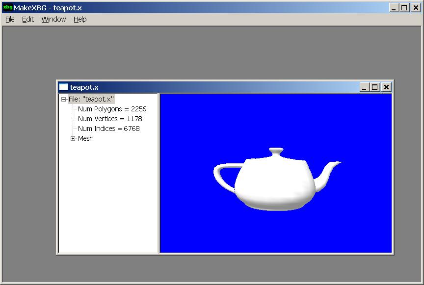

The MakeXBG tool is used to convert DirectX geometry files (.x) into .xbg geometry files that are more suited for Xbox titles.
In addition to converting DirectX geometry files into .xbg geometry files, the MakeXBG tool can be used to stripify a mesh or visually configure the flexible vertex format (FVF) settings of a mesh. As mentioned in John Harding's white paper Xbox Graphics Performance Tuning Strategies, MakeXBG runs meshes through a vertex cache emulator as part of the tri-stripping process. The result is reported as "Num cache misses".
The .xbg format is used by the Xbox Samples. You are not required to use the .xbg format for your games, and the Xbox team is not promoting this format as a standard. You will likely use your own custom format in your title. But the .x file format is a carry-over from the early days of DirectX and is not an optimal solution for Xbox titles.
Upon starting MakeXBG, you can open the .x file you want to convert by clicking Open on the File menu. The program then displays the contents of the .x file in its child window, as shown in the following illustration.

Notice also that the program displays the mesh information in a tree control in the left pane of its child window.
To configure a mesh's flexible vertex format settings, start by clicking on Mesh in the tree control, and then click Edit in the main menu. From the Edit menu, choose Set Mesh FVF. MakeXBG then displays a dialog box similar to the following.

The check boxes enable you to specify the attributes of the vertices. For example, the Blend Weights check box and its associated drop-down list enable you to set the number of blending weights associated with the vertices. Vertices can have a maximum of four blending weights.
The Color 0 and Color 1 check boxes enable you to specify whether the vertices have diffuse and specular colors associated with them.
The four Tex Coords check boxes enable you to set the number of texture coordinates vertices have in each of the four blending stages.
To stripify a mesh, first click on Mesh in the tree control. Now click Edit on the main menu. Next, choose Stripify Mesh. MakeXBG displays the following dialog box.

Select the optimization method and the output data type by using the check boxes along the bottom of the dialog box. When the settings are to your liking, click the Stripify button.